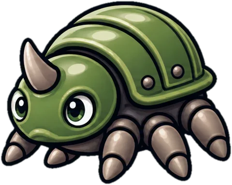

Tap a stage to read its story.
Carapiny is a small, rounded beetle with a neatly plated green-grey shell and a single short stubby horn on its head. Six legs carry it at a brisk, purposeful trot through Steel Fortress's lower corridors, antennae twitching at every wall seam and rivet. It has a habit of tapping metal surfaces with its front legs, as though testing structural integrity - and in a fortress that has stood for centuries, its checks are not entirely wrong. Workers follow its inspection routes as a loose maintenance schedule.
Field note: A Carapiny tap-pattern on a wall section has preceded three documented structural repairs at Steel Fortress - the maintenance crew now keeps a log.
Steel Fortress. Carapiny and its family are found in the Steel Fortress. See everyone who lives there.
Share a Bond Food that matches its types to become friends. Carapiny loves:
A Bond Food is not a trick. It joins your spirit with the Kimuro's spirit, and only when it chooses you.
Print the Kimuro adventure packs: mazes, cards, a board game and Bond Mark medals.
See the printable packs